Design studios
AWOL2 // Monash University // Semester 2 // 2022
MIDSEMESTER

Midsemester Projects
| Rabani Budhiraja | Duc Dao | Shantel Gilmore | Saraf Golfo | Mitchell Grant |
| Zara Lane | En-Ping Lin | Alice Mackey | Asma Marikkar | Mark Mbuga |
| Mohamed Niya | Fahad Muliika | Billie Patestos | Chongxi Shao | Nowshin Urme |
FINAL PROJECTS
Shared model
Level 1 - Shantel Gilmore
Crossing the line >> Crossing the void
Brief: Student exhibition, recreational and sports facilities, computer labs, 3 dwellings, and archive
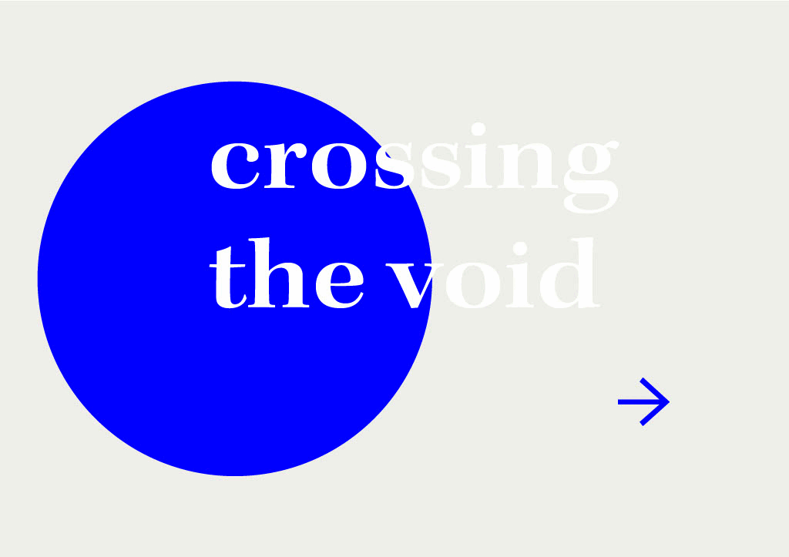Level 2 - Billie Patestos
Expect the Unexpected >> Unknown thresholds
Brief: Lecture Theaters, open access, Recreational and sports facilities, 3 Dwellings, and archive
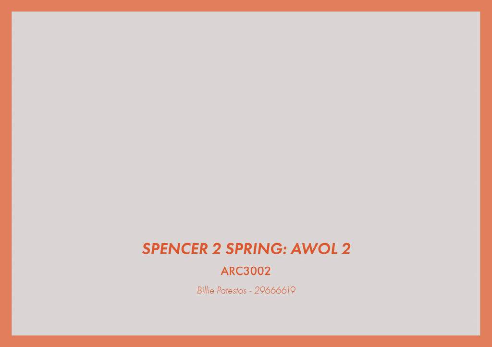Level 3 - Chongxi Shao
Varying privacy
Brief: Model making workshop, build and learn space, open access, cafe, storage, 4 Dwellings, and archive

Level 4 - Mark Mbuga
Sensory control
Brief: Lecture theatres, studios, open access, cafe, 3 Dwellings, and archive
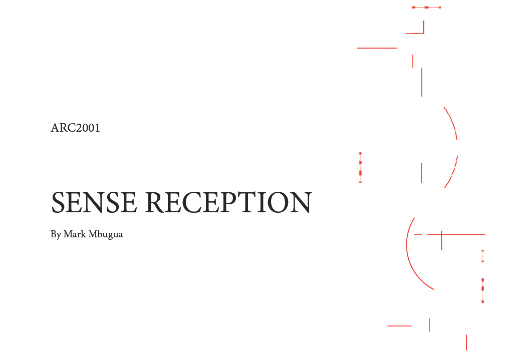Level 5 - Asma Marikkar
Eventful intersection >> XXX
Brief: Lecture theatres, studios, open access, cafe, 3 Dwellings, and archive
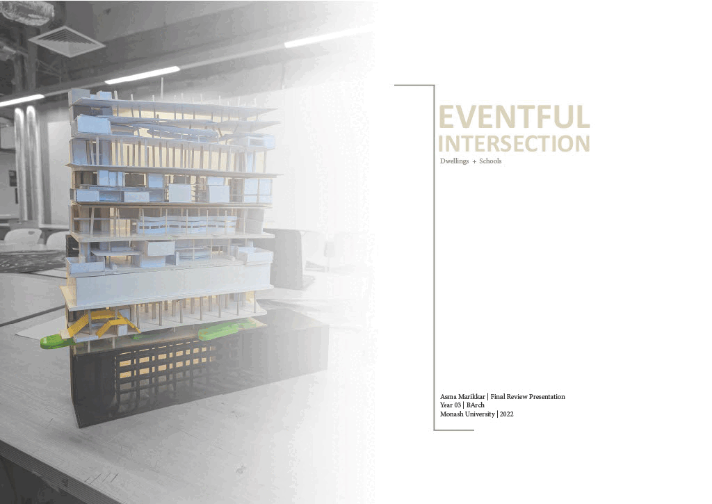Level 6 - En-Ping Li
Flowing wall
Brief: Student exhibition, model making workshop, end of trip facilities, recycling centre, 3 Dwellings, and archive

Level 7 - Zara Lane
Spatial bid >> Neighbourhood bid
Brief: Open access, resource centre, cafe, end of trip facilities, 3 Dwellings, and archive
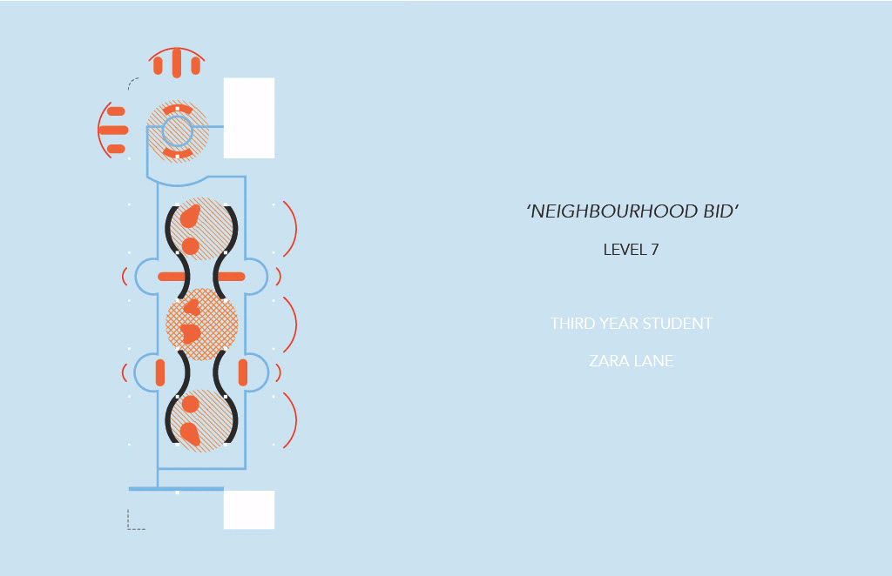Level 8 - Alice Mackey
Assymetrical mirroring >> Staggered mirror
Brief: Resource centre, end of trip facilities, open access, cafe, 3 Dwellings, and archive
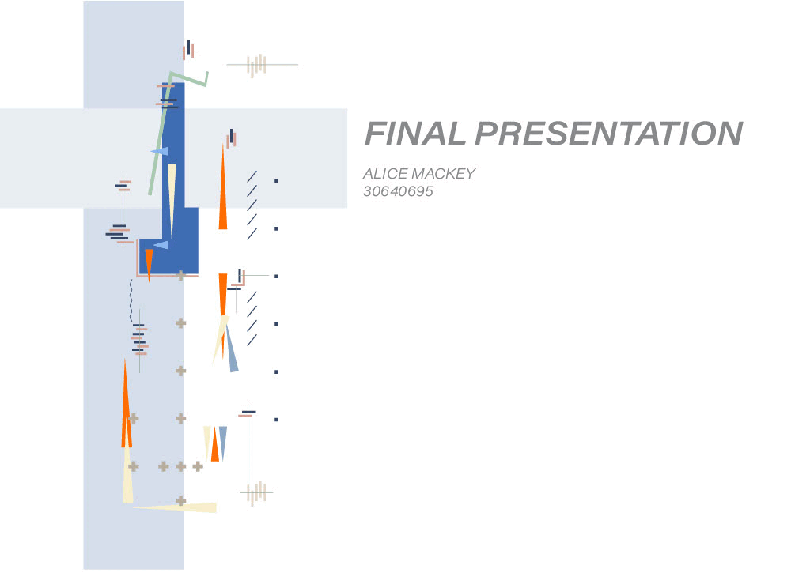Level 9 - Fahad Muliika
The bait >> XXX
Brief: Resource centre, open access, cafe, end of trip facilities, 3 Dwellings, and archive
Level 10 - Nowshin Urme
Urban filter >> Urban motive
Brief: Student exhibition, model making workshop, recycling centre, storage, 3 Dwellings, and archive
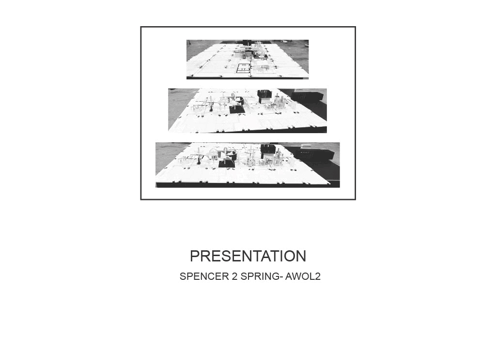Level 11 - Mohamed Niya
Crossing the line >> XXX
Brief: Studios, resource centre, cafe, end of trip facilities, 3 Dwellings, and archive

Level 12 - Duc Dao
Spatial bid >> XXX
Resource centre, lecture theatre, recreational and sports facilities, end of trip facilities, 3 Dwellings, and archive
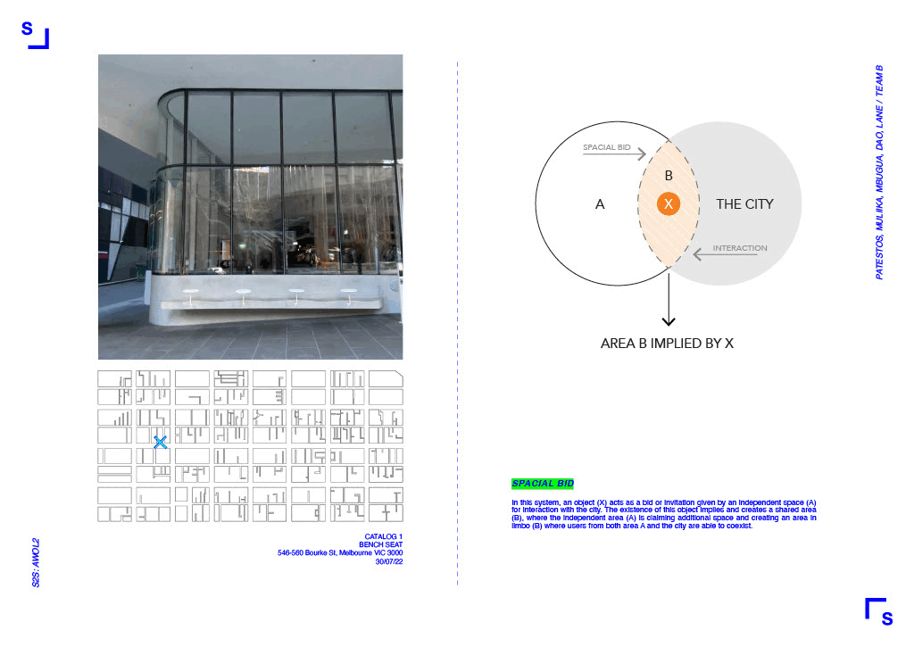Level 13 - Mitchell Grant
Offset >> XXX
Studios, open access, lecture theatres, cafe, end of trip facilities, 3 Dwellings, and archive
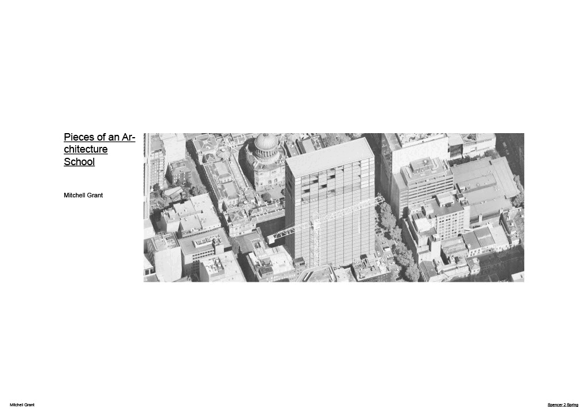Level 14 - Saraf Golfo
Extending opportunities >> XXX
Open access, student exhibition,recreational and sports facilities, end of trip facilities, 3 Dwellings, and archive
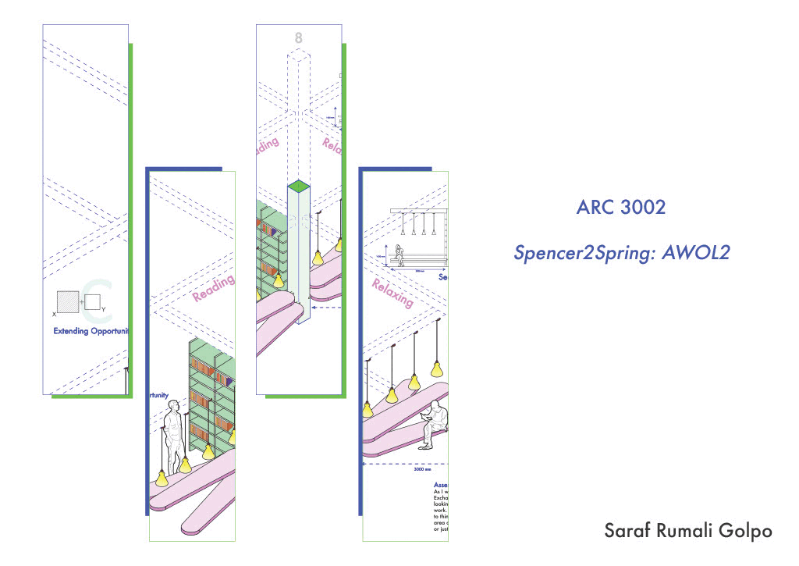Level 15 - Rabani udhiraja
Extending opportunities >> XXX
Open access, student exhibition, cafe, recycling centre, 3 Dwellings, and archive
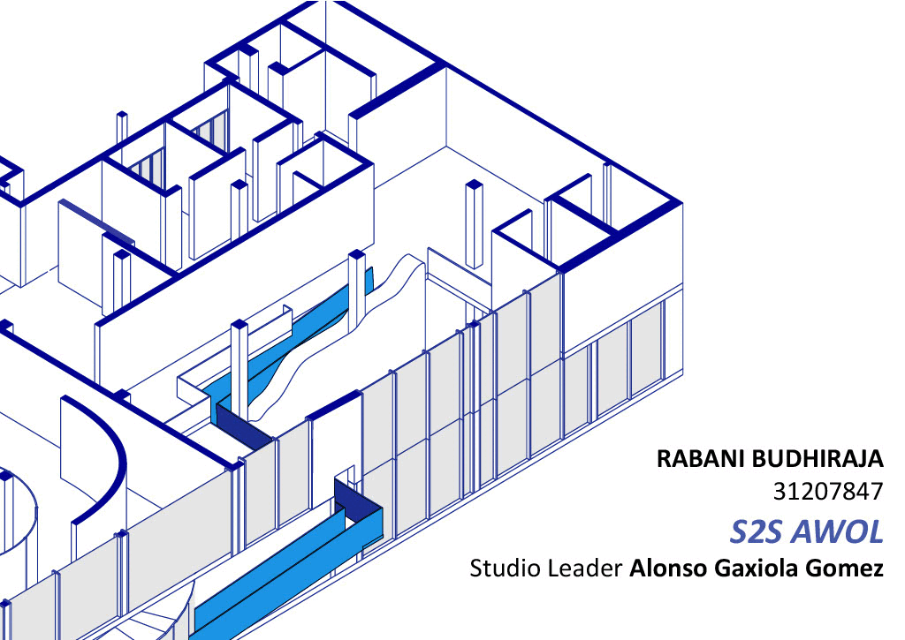AWOL1 // Monash University // Semester 1 // 2022
FINAL PROJECTS
Shared model